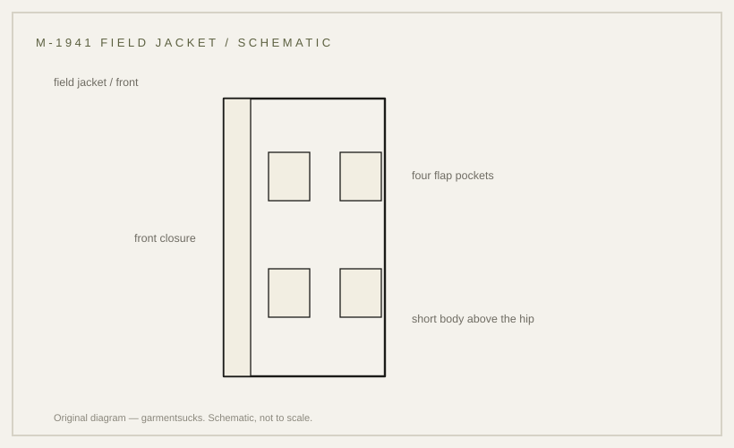

history · 1941
M-1941 field jacket: the first American field jacket
The first American field jacket, and the object record that proves what it was called.
probable Published 2026-11-13 · last checked 2026-11-13

1. Summary
The M-1941 field jacket — Jacket, Field, O.D. — replaced the long service coat with a short cotton jacket for field wear in the Second World War.
An Imperial War Museums object record confirms the designation and the wartime association; the development story and the garment's features were not found in an opened primary source. Confidence: probable — the designation is verified by an object record, but the development story is T3-only.
2. What this is
Jacket, Field, O.D., M-1941: a short, light cotton field jacket with a front closure and four pockets, worn over the shirt instead of the wool service coat.
O.D. is the olive-drab shade family; the M-1941 is often called the Parsons jacket after the officer credited with its design.
3. Origin and context
An Imperial War Museums record (UNI 13235) catalogues a Jacket, Field, OD, M-1941 associated with the US Army 2nd Ranger Battalion in the Second World War. The record confirms the designation and the period association; it does not describe the cut or the development history.
A museum object record aggregated by the Digital Public Library of America describes a Jacket, Field, od, Stock No. 55-J-200-55-J-304 with the designer named as Major General J. K. Parsons, and states that the jacket was later designated the M-1941. That record was reachable only as an excerpt.
Marketplace listings place the authorisation of development in November 1939 and describe the design as based on a civilian windbreaker suggested by Parsons. Those details are T3 and stay unverified.
4. How it works
A short jacket moves with the torso instead of binding at the thigh, and light cotton packs small. The field jacket was a compromise between warmth and mobility: the wool service coat was warmer but heavier and longer.
The mobility argument is inference from the garment's role; no period evaluation was opened for this card.
5. Construction
The work order readable from the garment type: cut the body, attach the four pockets with flaps, build the front closure and collar, set the sleeves, then the hems and hardware.
This sequence is inferred from garment construction; no document opened for this card describes it. Features often listed for the M-1941 — a zip hidden behind a button placket, four flap pockets, shoulder straps — were not confirmed from an opened source and are not asserted here.
6. Variants across eras
| Variant | Year/country | Difference | Source status |
|---|---|---|---|
| M-1941 field jacket | 1941, US | short light cotton field jacket | designation per IWM object record |
| M-1943 field jacket | 1943, US | heavier sateen shell, layering system | site card m43; independent record |
| M-1951 field jacket | 1951, US | post-war revision of the field jacket | not found |
| Modern reproduction | present | often heavier cotton, corrected hardware | market observation |
Competing accounts
The museum record supports Parsons as the designer but does not date the authorisation; the 1939 date comes only from a dealer. A dated authorisation, a Quartermaster specification, or a contract would settle it. The evidence currently favours Parsons as designer; the 1939 authorisation stays unverified.
| Account | Source (tier) | What it claims | Evidence offered | Weak point |
|---|---|---|---|---|
| Weitze (dealer) | T3 | Development authorised in November 1939; based on a civilian windbreaker by Parsons | dealer description | no document; commerce context |
| DPLA / History Colorado | T1 | Designer named as Maj. Gen. J. K. Parsons; later designated M-1941; stock number given | museum record excerpt | no authorisation date; excerpt only |
| Encyclopaedic summary | T4 | Phased in from 1941 and replaced around 1943 | summary text | no citation |
7. Telling an original from a reproduction
Check the label and the stock number if one survives; an original will carry a period stock number and contractor marking. Compare the cloth weight: the M-1941 is a light cotton, not a heavy sateen.
Reproductions tend to be heavier and cleaner, and often add features from the later M-43.
8. Common mistakes and myths
The common mistake is describing the M-1941 from the M-1943: the later jacket is a different cloth and a different system.
A second mistake is repeating the Parsons story as if it were documented in a primary source; on this card it rests on a museum record excerpt and dealer descriptions.
9. How to read it in wear
The jacket reads as a light layer: short body, plain front, four pockets. It sits under a coat rather than over one.
10. Modern designer trail
The field jacket's proportions are a standard reference in menswear. No direct-influence claim is made here.
11. Specification
The left column records only what a source states; no reproduction figures are proposed.
| Recorded in sources | Reproduction suggestion |
|---|---|
| Jacket, Field, OD, M-1941 (IWM UNI 13235; object record opened) | — |
| Stock No. 55-J-200-55-J-304; designer named as Maj. Gen. J. K. Parsons (DPLA museum record excerpt) | — |
| Cut and closure details: not found in opened sources | — |
12. Questions and exercises
1) Does a jacket you own carry a stock number, and can you read it? 2) Is the cloth light enough to fold into a small bundle? 3) Which claims here are T1, and which are T3?

Glossary
- Field jacket
- Short jacket worn over the shirt in the field.
- Service coat
- Long wool coat the field jacket replaced.
- O.D.
- Olive-drab shade family.
- Stock number
- Quartermaster catalogue number on a label.
Sources
- [S1] [T1] IWM object 30101005 — Jacket, Field, OD, M-1941, UNI 13235 (opened)
- [S2] [T1] DPLA / History Colorado record — Jacket, Field, od, Stock No. 55-J-200-55-J-304, designer J. K. Parsons (excerpt; original record not opened)
- [S3] [T3] Weitze — US M-41 jacket descriptions (1939 authorisation; Parsons windbreaker)
- [Photo] Paris Musées — US M-1941 field jacket, CC0
Claims & sources
| Claim | Source | Tier | URL | Status |
|---|---|---|---|---|
| Designation: Jacket, Field, OD, M-1941; WWII association (2nd Ranger Battalion) | IWM 30101005, UNI 13235 | T1 | link | verified |
| Stock No. 55-J-200-55-J-304; designer named as Maj. Gen. J. K. Parsons; later designated M-1941 | DPLA/History Colorado record | T1 | link | partially verified (excerpt) |
| Development authorised in November 1939; based on a civilian windbreaker | Weitze (dealer) | T3 | link | contested |
| Zip behind button placket, four flap pockets, shoulder straps | no opened source | — | not found | |
| Replaced by the M-1943 | secondary accounts only | T4 | unverified |